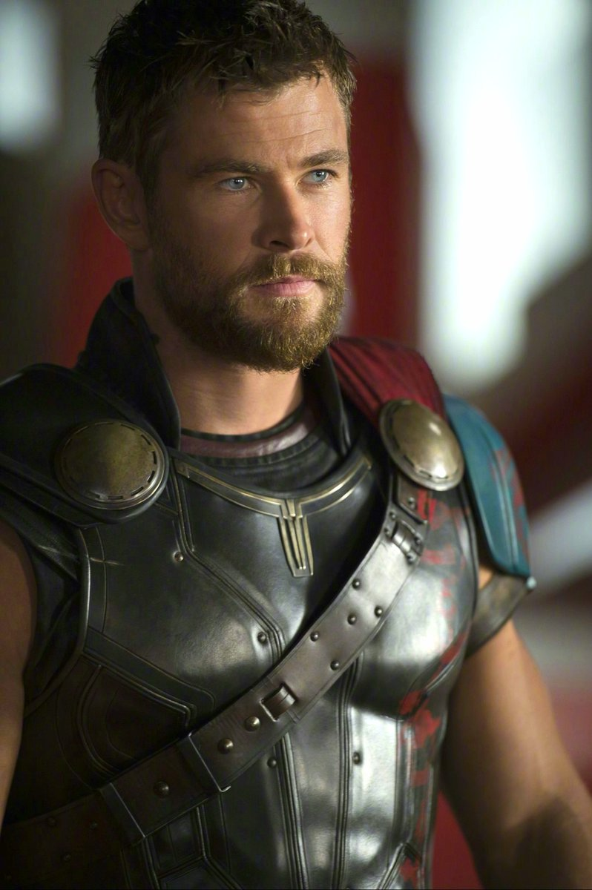
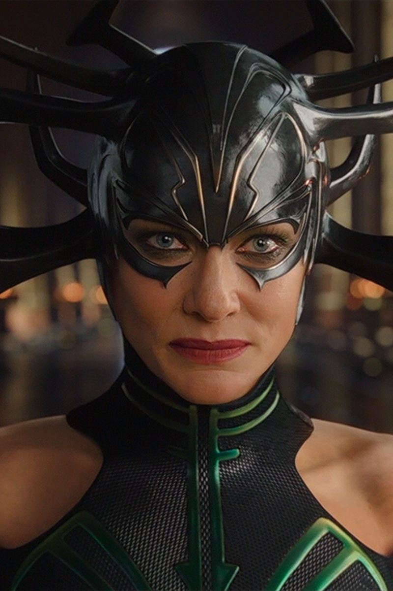
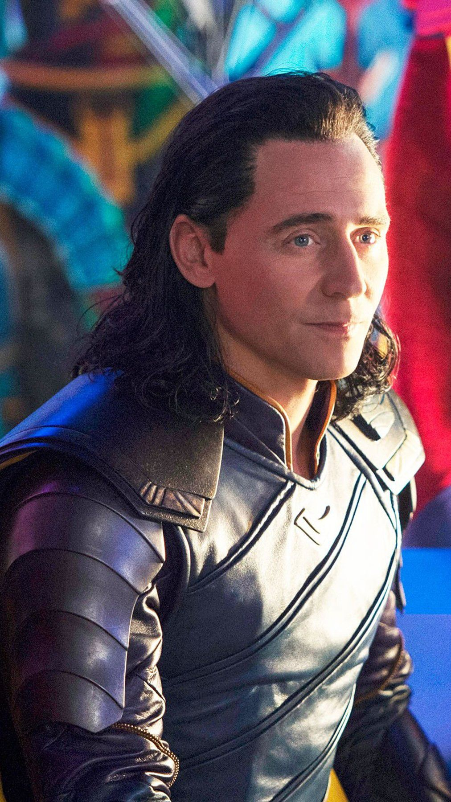
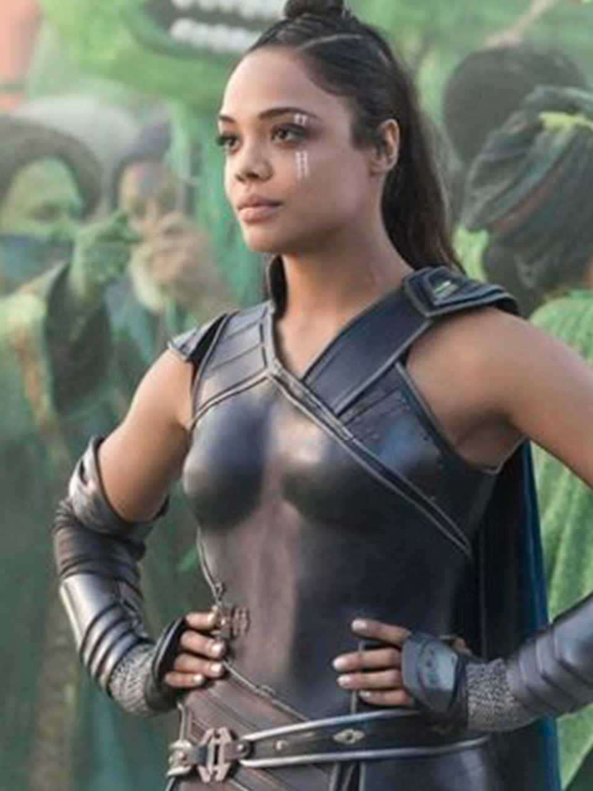
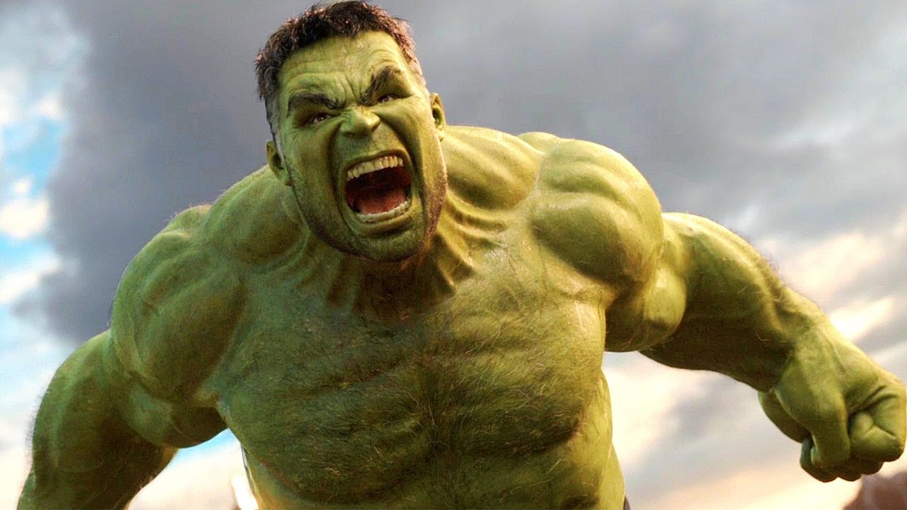

Thor Odinson é o Deus do Trovão, defensor tanto de Asgard
como da Terra, e um dos fundadores dos Vingadores.
Thor é filho de Odin , pai de todos e rei de Asgard.

Hela é a deusa asgardiana da morte e ela governa o reino de Hel,
um dos 9 reinos do Universo Cinematográfico Marvel.
A deusa possui traços de uma mulher comum,
mas também possui habilidades únicas de ser a deusa da morte.

Loki Laufeyson era o filho biológico do rei Laufey, o soberano dos Gigantes de Gelo.
Logo após o seu nascimento foi abandonado e foi encontrado por Odin,
e assim foi levado para se tonar um princípe em Asgard, e se tornou irmão adotivo de Thor.

Brunnhilde é uma Valquíria asgardiana que, anteriormente,
participou de um grupo de guerreiros de elite chamada de Valquírias.
Ela foi a responsavel por vender Thor ao Grão-Mestre.

O Dr. Bruce Banner, também conhecido como Hulk.
Ele foi recrutado pelo General Thaddeus para desenvolver
a primeira Bomba Gama. Durante seu primeiro teste ao vivo,
ele foi bombardeado com uma dose maciça de raios gama e se transformou em um
gigante verde, a personificação viva da raiva, alimentada por pura força física
e assim ele ficou conhecido"Incrível Hulk".